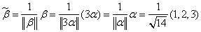
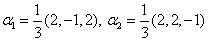
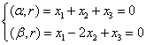

5.3 向量内积和正交矩阵
一、向量内积
| 我们知道在n维向量空间 我们考虑n维行向量空间
例1：求与的内积。 |
|
向量的内积有以下基本性质： 设， （1）对称性 （2）线性性 ， （3）非负性 ，而且 （4），其中等号成立当且仅当 |
向量的长度有以下基本性质： （1）非负性 （2）齐次性 （3）三角不等式 而 命题：设 |
|
例2：把以下向量单位化（1），（2） 解：（1），则 （2）因， 说明：在求的单位化向量时，可把正倍数
显然，零向量与任何同维向量都正交。 |
|
例3：取定，考虑在 证：因，知道为非空的。 对，由于，故 对，，故 所以是 |
显然n维标准向量组是标准正交向量组。 又如，，也是标准正交向量组。 |
|
例4：求出非零向量 解：设，由正交要求，得一般解为  ，于是，a为任意非零实数。 ，于是，a为任意非零实数。
证：设 设有 |
|
但线性无关向量组未必是正交向量组，我们有以下把线性无关向量组改造成等价的正交向量组的方法，即施密特正交化方法。
|
|
例5：将标准正交化（即单位正交化） 解：先正交化 令 再单位化，得 说明：必须先正交化，再单位化，否则，单位化工作就白做了。 |
二、正交矩阵
例如是正交矩阵 正交矩阵的基本性质： （1）A为正交矩阵 （2）A为正交矩阵 （3）A为正交矩阵，则 （4）当A为正交矩阵时，也是正交矩阵 （5）当A，B为同阶正交矩阵时，AB也是正交矩阵。 （5）的证明：由 所以 也就有：有限个正交矩阵的乘积一定是正交矩阵。 |
证：以三阶矩阵来证 设A的三个行向量为，则 所以，这就证明了A是正交矩阵当且仅当是单位正交向量组。 对于A的列向量组，由于 正交矩阵是一类在实用上很有意义的矩阵，它比可逆矩阵的条件还要强，可逆矩阵不一定正交。 |
请认真答题，测试一下你对前面知识点的学习情况！
(单选题) 23．已知向量α=(2,1,0,3)T，β=(1,-2,1,k)T,α与β的内积为2,则数K=( )
【答案】B
【解析】
【知识点】向量内积